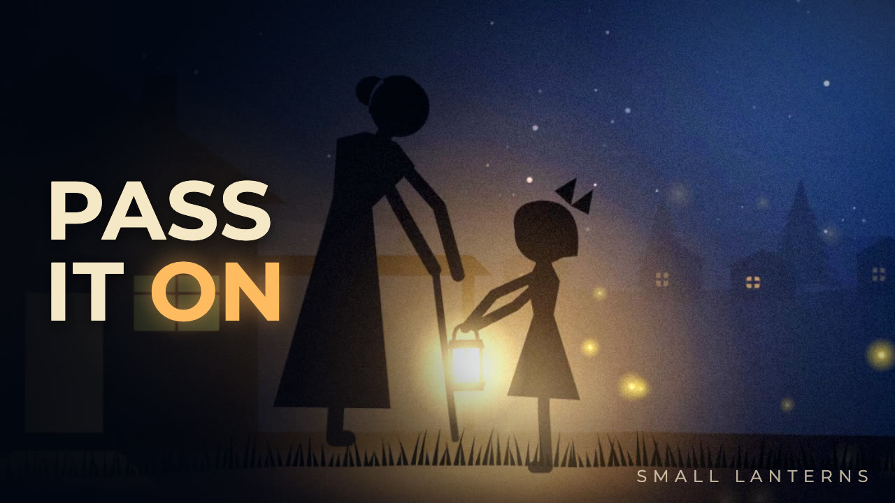

When Ada was six, her grandmother gave her a small lantern. "It isn't for seeing far. It's for seeing the next step." A five-minute animated short about childhood, the storm years, grief, love, growing old, and the light we hand to the people who come after us.
Watch on YouTube →Small Lanterns makes short animated films about the size of a life: childhood, love, loss, growing old, and the small lights we pass between us.
Each film is a few minutes long and made entirely in code. The animation is written in HTML, SVG and JavaScript; the music and sound are synthesized from scratch; the narration is a synthesized voice. No cameras, no stock footage.
New films every week on YouTube. Watch one before bed.